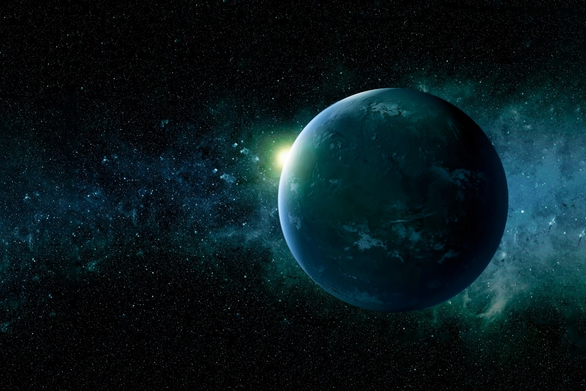

Nasa avista 2 planetas no sistema solar.
Telescópio da Nasa avista 2 planetas do tamanho da terra. Cientistas não determinaram se
são planetas habitaveis, ou se ao menos possuem uma atmosfera.
Descoberta
Dois exoplanetas foram descobertos por telescópios terrestres. Tendo sido registrado pelo TESS da Nasa,
ao meio de uma expedição em busca de planetas fora da órbita da Terra, foi encontrado, primeiramente, o
exoplaneta LP 890-9b.
Logo após a descoberta, e uma segunda checagem ao planeta fora descoberto um segundo astro:
o LP 890-9c.
Características
Os dois corpos celestes possuem quase as mesmas características, sendo elas:
Um exoplaneta rochoso, com características semelhantes à da Terra.
Possuí um periodo de rotação de 8,5 dias em torno de uma estrela anã.
Potencialmente hábitavel.
Pode possuir àgua e possui uma radiação solar semelhante à terrestre.

Segundo atuais informações, os planetas encontrados podem ser habitados. Por conta de sua grande semelhança com o
Planeta Terra, sendo em exposição do sol, possuir agua,ou a possivel atmosfera.